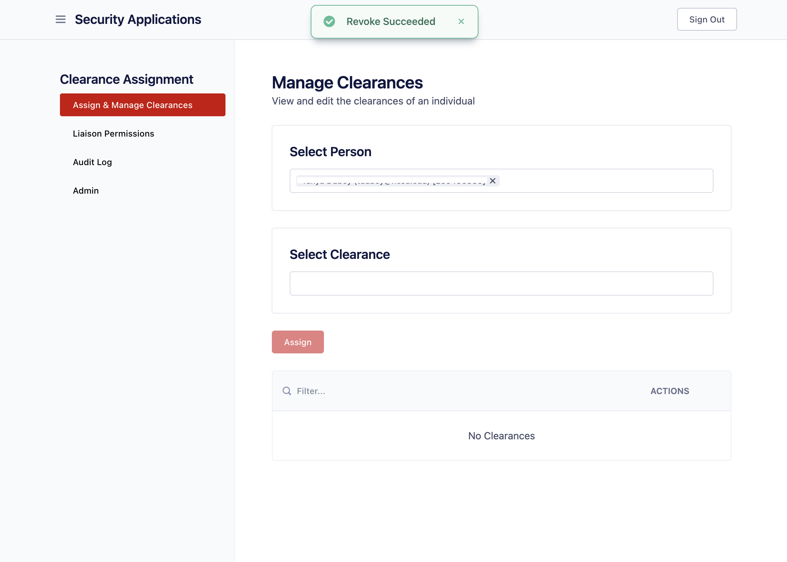
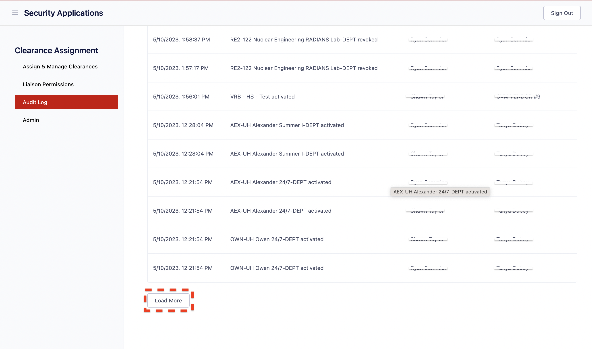

Clearance Tool¶
This application serves as a centralized platform for assigning and managing clearances, specifically door accesses. Users can be assigned one of two roles: "Liaison" or "Admin."
Admin¶
A user with the Admin role is granted administrative privileges and is authorized to perform the following activities:
- View, assign, or revoke clearances for users.
- View and update the list of clearances that a Liaison user is authorized to assign to other users.
- View chronological sequence of activities performed by all users through the clearance UI.
- View, add or remove "Liaison" and "Admin" users.

Assign and Manage Clearances¶
Assign Clearance:¶
Step 1: Type the UnityID or email address into the "Select Person" field and choose the desired person from the dropdown menu below. Once you have selected a "Person", a "Select Clearance" field will appear below it, followed by a list of the clearances that are available to the user. Please note that you have the option to select multiple users at this step.
Step 2: Enter the desired clearance in the "Select Clearance" field, and then click on the appropriate option from the filtered list of available clearances. Please keep in mind that you can select multiple clearances, and all of them will be applied to the users selected in the previous step.
Step 3: To complete the clearance assignment for the user/users, simply click on the "Assign" button. Once the clearance has been successfully assigned, it will appear in the list with a success message. Please note that if any of the selections made above are incorrect, the "Assign" button may not be activated.

Bulk Assign Clearances:¶
Step 1: Click the Choose CSV button to upload a csv file with up to 20 campus IDs to assign clearances to multiple users at once. Click the Download Template CSV button to see an example of a valid csv file.
Step 2: Once your file is uploaded and people are selected, continue assigning clearances starting with Step 2 in the "Assign Clearance" section above.
Revoke Clearance:¶
Step 1: Type the UnityID or email address into the "Select Person" field and choose the desired person from the dropdown menu below. Once you have selected a "Person", a "Select Clearance" field will appear below it, followed by a list of the clearances that are available to the user.
Step 2: Use the filter located in the header of the list if you are unable to locate the clearance you wish to remove in the list. Then, click on the "Revoke" button located next to the corresponding clearance. Upon successful revocation, the clearance will be removed from the list and a success message, as shown below, will be displayed.

Reports¶
Reports are clear lists of information about the assignable clearances. Reports include doors for each clearance, persons assigned to each clearance, and a history of badge swipes for each person.
The total assignments from all liaisons by month can be downloaded as a CSV by clicking the button on the far right labeled "Liaison Assignments".
Door Clearances¶
Door Clearances include a list of all assignable clearances and the doors tied to those clearances. A list of all clearances is shown, paginated. Under each clearance, three or less doors will be shown. To view all doors, expand the clearance, and all doors will be shown for that clearance. Each door record includes the name of the door, whether or not it is a door or an elevator, and the schedule of the door.
People Clearances¶
All persons who have each clearance will be displayed for each clearance that is allowed to be assigned. Much like Door Clearances, a paginated list of all clearances is shown, and under each clearance, three or less persons will be displayed. Expand the clearance to view everyone who has that clearance. Each person includes a first name, last name, campus ID, department, and status. The report can optionally be filtered by person to view each clearance that person has.
Transactions¶
This feature is not yet implemented.
Liaison Permissions¶
Assigning Liaison User a Permission:¶
An Admin user can grant a Liaison user permission to assign a clearance to a student or an individual through the following steps:
Step 1: Type the UnityID or email address into the "Select Person" field and choose the desired person from the dropdown menu below. Once you have selected a "Person", a list of the clearances available to that user will be displayed below. Please note that only one user can be selected at a time in this section.
Step 2: Enter the desired clearance in the "Select Clearance" field, and then click on the appropriate clearance from the filtered list in the dropdown menu below. Please keep in mind that you can select multiple clearances, and all of them will be applied to the user selected in the previous step.
Step 3: To complete the clearance assignment for the Liaison user, click on the "Give Permission" button. Once the clearance has been successfully assigned, it will appear in the list with a success message. Please note that if any of the selections made above are incorrect, the "Assign" button may not be activated.
Audit Logs¶
The "Audit Log" screen serves as a comprehensive record of all clearance assignments performed by any Admin user. It maintains a detailed log of every instance where clearances have been assigned or revoked. This screen allows users to track and review the history of clearance assignments and revokations made within the system. Every record includes the following information:
"DATE ASSIGNED": This column displays the date and time when the assignment or revocation took place.
"ACTION": In this column, you will find the name of the clearance followed by the verb "assigned" or "revoked", indicating the action that occurred.
"ASSIGNED TO": This column contains the name of the individual to whom the clearance was either assigned or revoked.
"DONE BY": The user who performed the operation is identified in this column by their name.
[1] The refresh button at top right retrieves the latest entries. [2] The filter button enables the user to apply predefined filters for refining the logs based on specific criteria.
To retrieve the next set of logs, scroll to the bottom of the screen and click the "load more" button.

There are four types of filters available for refining the logs. The filters are listed as follows:

"Filter by Person": To filter by the name of the individual receiving the assignment, select "Filter by Person" and enter the UnityID or email address in the "Select Person" field. From the drop-down menu below, select the desired person. This will refine the displayed results based on the selected individual's involvement in the assignments.
"Filter by Assigner": To filter by the user/Liaison who performed the operation, select "Filter by Assigner" and enter the UnityID or email address in the "Select Person" field and select the desired person from the list.
"Filter by Clearance Name": To apply the "Filter by Clearance Name" option, start by entering a clearance name in the search clearance field. Next, select the desired clearance from the list. By performing these steps, all the logs associated with the chosen clearance will be shown in the resulting view.
"Filter by Timeframe": The "Filter by Timeframe" option allows you to refine the displayed logs based on a specific time range. By selecting this filter, you can define a starting and ending time to narrow down the logs within that timeframe.
By default, the "Start" and "End" are not selected, resulting in the display of all logs in the list. To specify a "Start" date and time, click on the first circle. A calendar view will appear, allowing you to choose the desired date. Scroll vertically in the time column to select the desired time. Repeat the same process for the "End" date and time by clicking on the second circle.
This feature is useful for focusing on a particular period of interest, such as logs generated within the last day, week, month, or any custom timeframe.
It is possible to apply more than one filter simultaneously to obtain further refined results. However, please note that a maximum of three filters can be applied, with the limitation that you can choose either "Filter by Person" or "Filter by Assigner", not both at the same time.
Admin - Manage Users¶
The "Manage Users" page allows authorized users to add or remove accounts with administrative rights. With this feature, authorized users can efficiently manage the list of Admin and Liaison users.
To remove an admin user, locate them in the list using the filter in the header of the list, and then click on the "Revoke" button next to the user.
To remove a Liaison user, locate them in the list using the filter in the header of the list, and then click on the "Revoke" button next to the user.